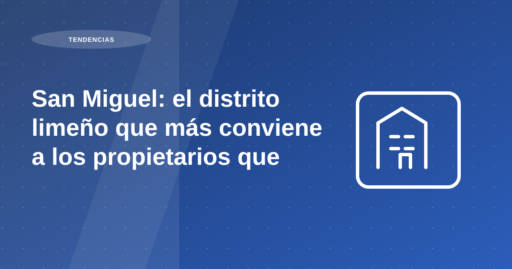

San Miguel: el distrito limeño que más conviene a los propietarios que alquilan

San Miguel se ha consolidado como uno de los distritos más estratégicos y rentables para propietarios que alquilan en Lima . Gracias a su conectividad, crecimiento ordenado y alta demanda, es una zona ideal para quienes buscan generar ingresos constantes con su inmueble sin complicaciones.
San Miguel ha apostado por un crecimiento formal y planificado. En la última década, ha sido protagonista de:
Acceso directo a avenidas como La Marina, Universitaria y Elmer Faucett, además de la Costa Verde.
Tabla de contenidos
- A. San Miguel: ubicación privilegiada, demanda constante
- B. Desarrollo urbano con visión
- 🟣 1. Ubicación que conecta con todo Lima
- 🟣 2. Educación y empleabilidad cerca
- 🟣 3. Vida activa, comercio y servicios
- D. Rentabilidad: San Miguel frente a otros distritos
- E. ¿Y si no quiero lidiar con inquilinos? Delegalo a Proper Rentas
- F. San Miguel + Proper Rentas = ingresos constantes y tranquilos
A. San Miguel: ubicación privilegiada, demanda constante
San Miguel se ha consolidado como uno de los distritos más estratégicos y rentables para propietarios que alquilan en Lima . Gracias a su conectividad, crecimiento ordenado y alta demanda, es una zona ideal para quienes buscan generar ingresos constantes con su inmueble sin complicaciones.
Recomendación operativa: traduce la tendencia del mercado a decisiones concretas de producto, precio y experiencia. El dato por sí solo no genera resultado si no se convierte en ejecución.
B. Desarrollo urbano con visión
San Miguel ha apostado por un crecimiento formal y planificado. En la última década, ha sido protagonista de:
- Renovación de parques y espacios públicos
- Mejoras en iluminación, accesibilidad y seguridad
- Aumento de su valor catastral por infraestructura privada
Recomendación operativa: traduce la tendencia del mercado a decisiones concretas de producto, precio y experiencia. El dato por sí solo no genera resultado si no se convierte en ejecución.
🟣 1. Ubicación que conecta con todo Lima
Acceso directo a avenidas como La Marina, Universitaria y Elmer Faucett, además de la Costa Verde.
Recomendación operativa: traduce la tendencia del mercado a decisiones concretas de producto, precio y experiencia. El dato por sí solo no genera resultado si no se convierte en ejecución.
🟣 2. Educación y empleabilidad cerca
Muy cerca de universidades de prestigio como PUCP , UNMSM , UPC y de zonas laborales clave.
Recomendación operativa: traduce la tendencia del mercado a decisiones concretas de producto, precio y experiencia. El dato por sí solo no genera resultado si no se convierte en ejecución.
🟣 3. Vida activa, comercio y servicios
Centros comerciales como Plaza San Miguel , zonas gastronómicas, ciclovías, parques y el malecón.
Recomendación operativa: traduce la tendencia del mercado a decisiones concretas de producto, precio y experiencia. El dato por sí solo no genera resultado si no se convierte en ejecución.
D. Rentabilidad: San Miguel frente a otros distritos
Invertir o alquilar en San Miguel ofrece una de las mejores combinaciones de rentabilidad + rotación en Lima .
📈 Alquiler mensual promedio: S/ 2,000 – S/ 2,700 📉 Menor riesgo de vacancia: demanda sostenida por parte de jóvenes, parejas y familias pequeñas 💸 Rentabilidad anual estimada: entre 5.5% y 7.5% bruta , dependiendo del inmueble
A diferencia de distritos como Miraflores o San Isidro, donde los precios de compra son más altos, San Miguel ofrece una entrada más accesible con excelente retorno .
Recomendación operativa: traduce la tendencia del mercado a decisiones concretas de producto, precio y experiencia. El dato por sí solo no genera resultado si no se convierte en ejecución.
E. ¿Y si no quiero lidiar con inquilinos? Delegalo a Proper Rentas
Si tienes una propiedad en San Miguel y quieres alquilarla sin complicarte, Proper Rentas es la solución.
👉 Nos encargamos de todo el proceso de alquiler y gestión 👉 Filtramos inquilinos confiables 👉 Redactamos y firmamos contratos digitales 👉 Gestionamos pagos puntuales, mantenimiento y atención continua 👉 Tú solo ves los ingresos, mes a mes
Es la forma moderna de alquilar , sin estrés, sin riesgos, con un equipo especializado a tu servicio.
Recomendación operativa: convierte cada obligación del contrato en un control verificable. Mientras más explícitos sean los criterios de pago, mantenimiento y entrega, menor fricción habrá durante la administración.
F. San Miguel + Proper Rentas = ingresos constantes y tranquilos
Ya sea que tengas un departamento vacío o estés evaluando comprar para alquilar, San Miguel es una apuesta inteligente . Tiene lo que todo propietario necesita: demanda constante, valorización continua y rentabilidad real.
Y si lo haces con Proper Rentas, tu única tarea será revisar que el dinero haya llegado a tu cuenta .
🔍 ¿Cuánto podrías ganar alquilando tu propiedad en San Miguel? Haz una evaluación gratuita aquí: 👉 https://proper.com.pe/rentas
- Tags: Bienes Raices , Departamentos para alquilar , INEI , Inversión de Bienes Raíces , Inversiones Inmobiliarias , Peru , Peruanos , Renta residencial , Viviendas para alquiler
Recomendación operativa: traduce la tendencia del mercado a decisiones concretas de producto, precio y experiencia. El dato por sí solo no genera resultado si no se convierte en ejecución.
Plan de acción recomendado para propietarios
En temas de mercado urbano y tendencias, la clave es convertir señales macro en decisiones micro. Comienza con un mapa de demanda por zona, ticket de alquiler viable y perfil de inquilino objetivo. Sin ese cruce, es difícil diseñar un producto realmente competitivo.
Luego, revisa atributos del inmueble que más pesan en decisión: ubicación efectiva, conectividad, funcionalidad del layout y nivel de equipamiento. En escenarios de oferta amplia, estos factores son determinantes para sostener ocupación.
Por último, diseña un plan comercial y operativo coherente con ese posicionamiento: narrativa del aviso, tiempos de respuesta, experiencia de visita y proceso de cierre. El mercado premia consistencia entre promesa y ejecución.
- Mapear demanda por tipología y zona.
- Definir propuesta de valor por segmento.
- Ajustar precio con data de mercado reciente.
- Medir tracción comercial por semana.
Errores frecuentes y cómo evitarlos
Error frecuente: copiar estrategias de otras zonas sin adaptar la propuesta al contexto del distrito. Aunque dos ubicaciones parezcan similares, el comportamiento de demanda puede cambiar de forma significativa.
Otro error es evaluar desempeño solo por visitas. Lo importante es la conversión a propuestas firmes y la calidad del perfil interesado, no solo volumen de contacto.
Indicadores para medir resultados mes a mes
Para medir si la estrategia funciona, controla tasa de conversión visita-propuesta, días promedio a cierre y porcentaje de ocupación efectiva por trimestre. Esos indicadores reflejan ajuste real entre producto y mercado.
Incluye un KPI de satisfacción del inquilino en etapa de ingreso. Una experiencia inicial ordenada mejora permanencia y reduce costos de rotación.
Preguntas frecuentes
¿Qué acelera más un alquiler: bajar precio o mejorar proceso?
Mejorar proceso primero: publicación, filtros y tiempos de respuesta suelen tener mayor impacto sostenible.
¿Qué debe estar listo antes de publicar?
Documentación, fotos reales, reglas de evaluación y rango de negociación definido.
¿Qué evita retrabajo durante la gestión mensual?
Estandarizar contrato, cobranza, registro de incidencias y reportes al propietario.
Conclusión
Al revisar san miguel: el distrito limeño que más conviene a los propietarios que alquilan, la conclusión principal es que la rentabilidad no depende de una sola decisión, sino de la calidad del proceso completo: análisis previo, ejecución comercial, filtro, contrato y administración mensual.
Si priorizas estandarización, medición y mejora continua, reduces vacancia, controlas riesgo y sostienes mejores resultados para tu propiedad en el tiempo.